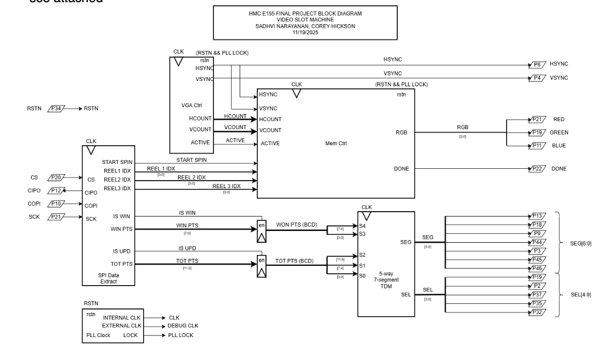
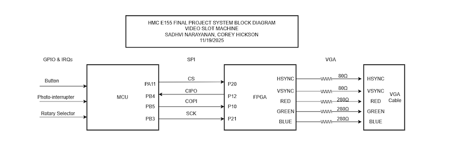
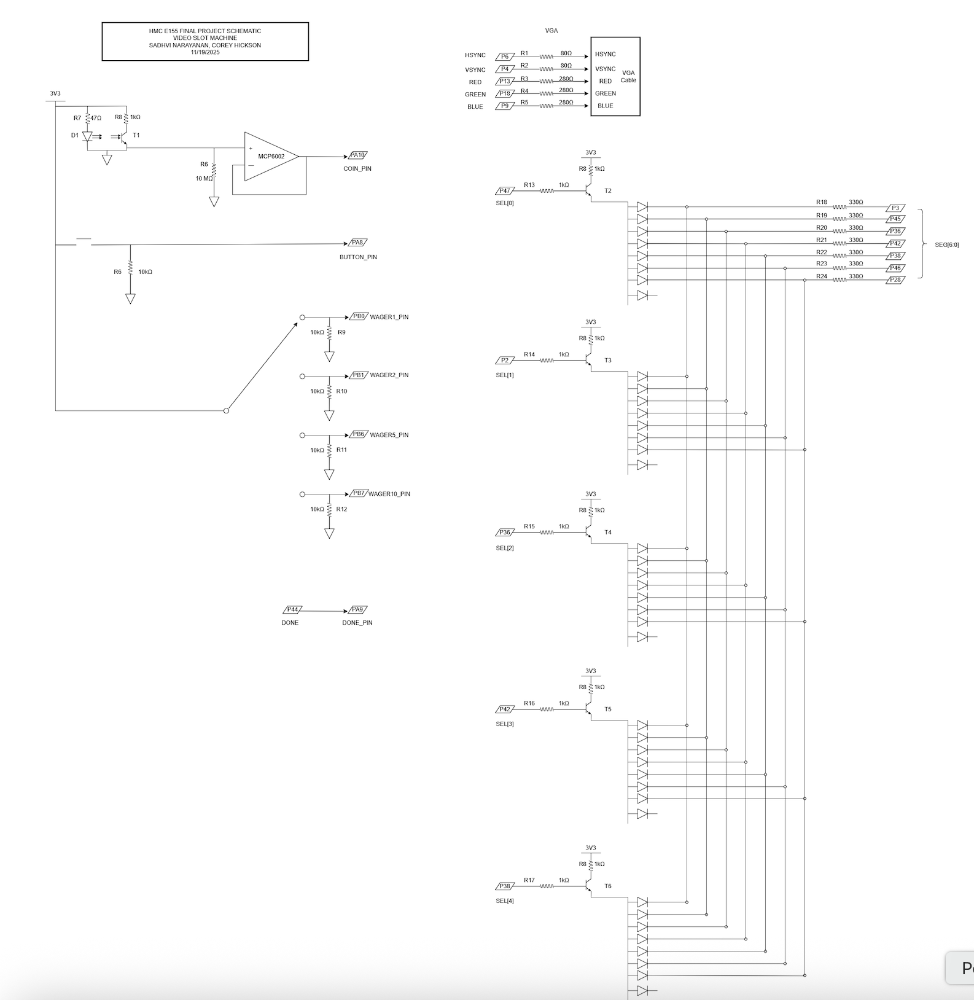
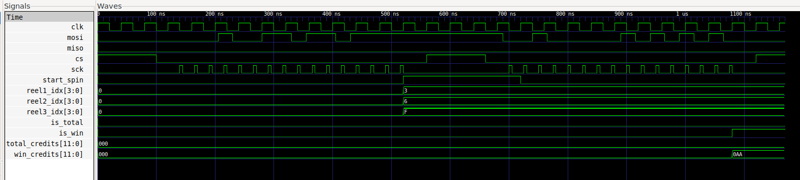
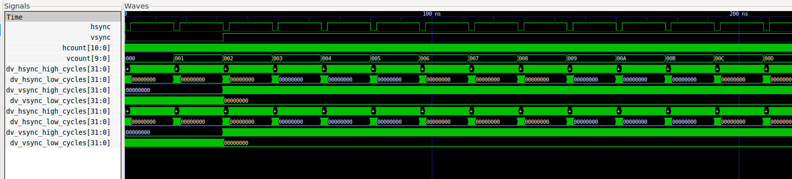

E155 Final Checkoff: FPGA + MCU Slot Machine
Project Description and Overview (same as before)
The goal is to create a functional, visually engaging slot machine simulation that:
Accepts a penny slot and “spin” button input.
Displays animated reels on a VGA output.
Sequentially stops each reel to show a final symbol combination determined randomly by the MCU.
Calculates and displays winnings and total credits based on the result.
The FPGA will handle video display including sending information to the VGA and time-sensitive animations, while the MCU will manage the actual game logic/state, input handling, and random number generation.
The system will include: - Three spinning reels rendered on a VGA monitor.
A coin slot, push buttons, and a switch for user interaction:
Spin Button — initiates reel animation.
Denomination Switch - indicated how much to bet per spin
Coin Slot — triggers an interrupt and increments credits using an LED to photo diode monitor
5 seven segment displays, 2 for credits won on the previous spin, and 3 for total credits accrued
The design will interface the MCU and FPGA via SPI communication, allowing the FPGA to render and display the visual state based on the game logic computed by the MCU.
Project Specifications
All the specs we defined have been met in our project.
- Starts spinning three reels on a button input
- Yes, this spec is met in our project. When the user presses the SPIN button, if there are enough credits, the MCU will capture the input button press, and send a SPI request to the FPGA. The FPGA will then process this request, extract the spin code and the ending sprites for each reel, and then start the process to spin each of the reels. It will spin all the reels, then start to slow down reel1, stop reel1, then slow down reel2, stop reel2, and finally slow down reel3, and stop reel3.
- Calculates points and displays credit total
- Yes, this spec is met in our project. On the MCU side, it uses the TRNG to determine where each reel will end, it keeps track of the current credits, and the credit payout based on the spin, and then sends an UPDATE SPI request to the FPGA to udpate the credits appropriately. If the ending sprites corresponds to a WIN, then the MCU will send the FPGA a WIN request, and the FPGA will take the numbers to display, and put them on a seven segment display.
- Sequentially stops each reel on a centered shape
- Yes, this spec is met in our project. In the FPGA side, based on the sprite to end on, it will calculate the address of that sprite (will account for the unique sprite sequences across the 3 reels), and then use that offset to get to a centering offset, where the final sprite appears in the middle of the reels. Then, in our FSM it will spin all the reels, and as it starts to stop the reels one by one, it will check if the current offset is equal to the ending offset, and if so then it will fully stop the reel movement and lock the reel in place.
- Displays result on VGA in color
- Yes, this spec is met in our project. We have all our sprites in memory, where for each pixel we store 3 bits - each a bit for color (R, G, B). And when we calculate the address we extract 3 bits to get the RBG values we send to the VGA.
- Penny input with adjustable bet levels
- Yes, this spec is met in our project. We built a coin detector, which uses photo-transistors to detect an IR drop when a coin passes through it. This then triggers an interrupt which updates the total credit amount calculation. Additionally, we have a rotary switch which allows users to configure their bet level (1x, 2x, 5x, 10x).
- Only start game if enough credits
- Yes, this spec is met in our project. Based on the number of credits the user has, when the SPIN button is pressed, if there are not enough credits the request will not be sent from the MCU to the FPGA. Only if the user has enough credits, it will send the SPI SPIN request when the user presses the spin button.
- Cryptographically seeded RNG (using hardware RNG)
- Yes, this spec is met in our project. We are using the TRNG on the MCU in order to determine where the reels should stop after a spin. We enable the peripheral, and we can see that on every spin the ending positions are random.
- Display credit total and winnings on screen or seven-segment display
- Yes, this spec is met in our project. Whenever the MCU sends the updated credit or win amount to the FPGA, it will take the sent credit amount, store it in registers, and display them on the seven segment display. We display the total number of credits the user has, as well as the amount of credits they won on the most recent spin.
Block Diagram

The block diagram in Figure 1 demonstrates the overall design and architecture of the design. We can see there are a variety of control modules to handle the VGA display as well as memory accesses (to display the sprites correctly). We also have ROM blocks, and other elements include a SPI module and 7-segment display for other feautures in our design.
System-level Block Diagram

Figure 2 represents the system level block diagram, highlighting how the MCU, VGA, and our external hardware connect using their respective communication protocols.
Schematic

The schematic in Figure 3 demonstrates the overall design of how we are connecting the FPGA to the VGA monitor. Because we are only using 3-bit resolution for the pixels, we are scaling the voltage outputs to 0.7 if we want to display a color. NOTE: Any pins with a letter in it corresponds to a pin on the MCU, and any pin with no letters and just a number corresponds to a pin on the FPGA.
Testbenches


Figures 4 and 5 represent some of the testbenches for our design. In Figure 4 we have the SPI module testbench, which starts the reel spinning process, based on SPI codes and values sent by the MCU. And, Figure 5 is our VGA testbench which shows our monitor synchronization signals.